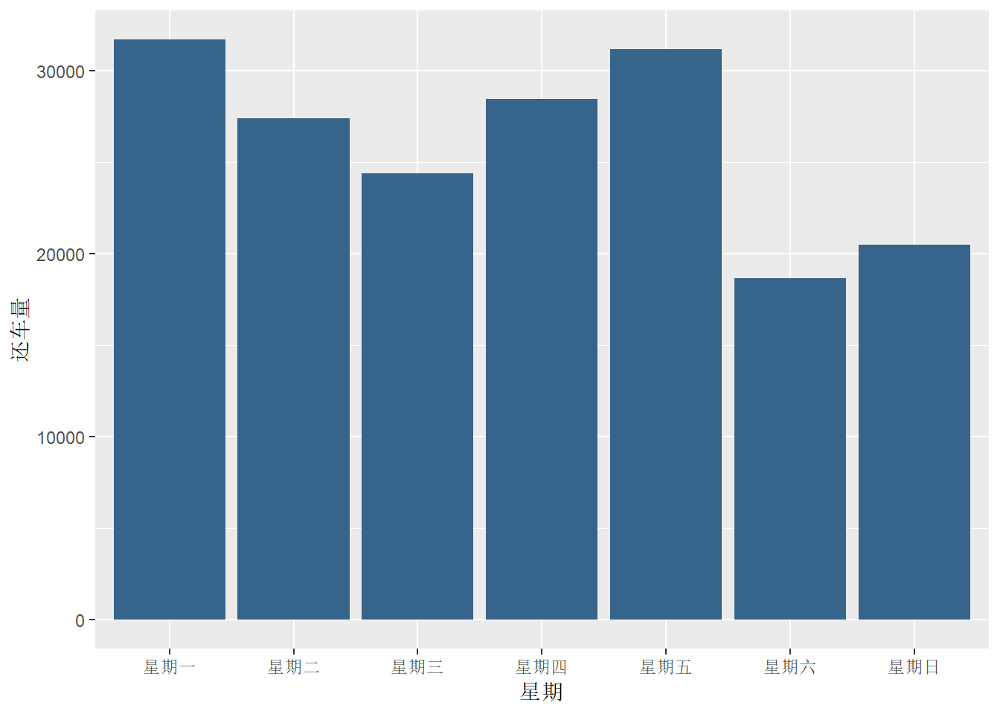
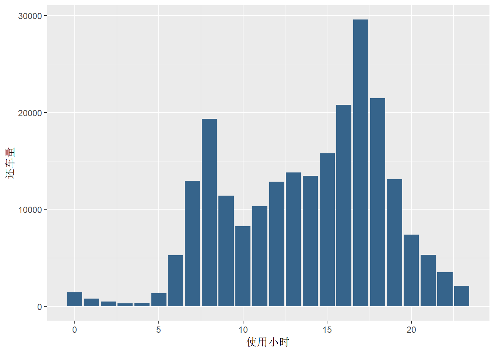
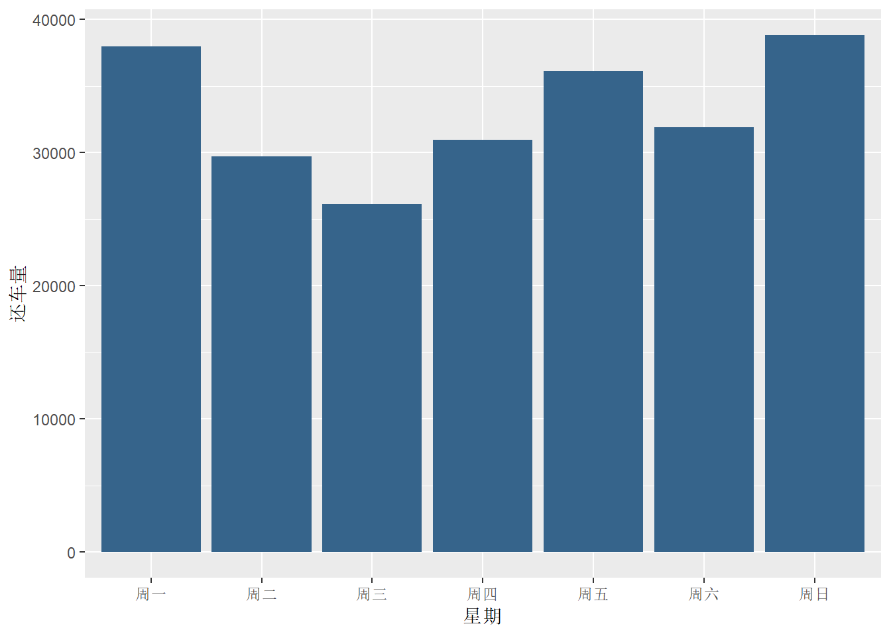

第 5 章 TASK 3 代码规范
5.1 学习资料
5.1.1 注释篇
文件注释：写清楚这个代码文件主要是用来做什么的。
分块注释：写清楚这部分代码的主要功能。例如：这部分代码是数据描述的，那部分代码是建模的。
重要的代码注释：写清楚这句代码的主要用途，如何思考的，涉及到的重要公式有时候都可能需要。记住对于每据的代码尽量对齐。
5.1.2 命名篇
用有意义的词定义变量名。例如车联网的案例中，我们会定义某辆车在某段行程中的最大速度。那么就可以使用speed-max来定义这个变量。千万不要使用zuidasudu。
构建自己一致的代码风格。我们命名规则分为：文件名，变量名，函数名，常数名。例如：文件命名predict.adrevenueR（一看就知道是广告收入预测）；变量及函数命名规则：在R环境下，大小写是敏感的。变量名小写字母，单词间用一分隔；函数名用每个单词用大写字母开头，不用一连接。常数项跟函数一样命名但以小k开头。
变量：avg-clicks
函数名CalculateAvgClicks（函数是个动作，所以可以一般写成动宾结构）
常数项：kConstantName
这样就构建了你自己的代码风格。保持一致，并告诉合作者，大家都能明白了。
全球统一的代码风格。如果不能形成自己的代码风格，或者觉得不知道怎么形成。那么使用别人规定好的代码风格就好了。
5.1.3 函数模块化
代码写得好不好，全靠函数来提高。这什么情况呢？我们继续以车联网的案例为例子。在对车联网数据做数据描述的时候，我们经常希望能够画出某辆车在重要的行程上的轨迹。这里面就会涉及到，如何画从某个启示点到终点的轨迹的代码。设想你画了三个轨迹之后，必然发现代码十分冗余，每次都写同样的画图部分，如果用ggplot2，更是一堆参数设置，不停的复制黏贴。那么为什么我们不把重复出现的代码模块化到同一个函数呢？命名为：PlotCarTrip。
5.1.4 纠错与调试
纠错应该是写好代码最重要的一个环节。我曾经问过写代码的人，你怎么纠错呀。很多人回答是我不纠错！吓死宝宝了，那代码真没问题吗？
俗话说的好：谁写的代码没有错。知错能改，善莫大焉。那么怎么改！大家尝试下如下按钮。
千万不要掉以轻心，还有两大难关需要过。分别是：提高代码效率与提高代码可读性。
首先，如何检查代码效率呢。代码效率就是要知道，我写了这么多代码，哪部分运行起来最耗时呢？同样的工作，我跑了24小时，累死机器宝宝了。别人1小时跑完，还出去吃喝玩乐了一把，好羡慕呀。那么这问题咋解决。你必须找到你的代码不行的地方。怎么找？可以试试如下按钮哦。
其次，如何解决那些效率低下的代码呢。常见的方法如下：
- 向量化处理
# 构建一个10*10的矩阵，矩阵的第一列都是1，第二列都是2，一直到第十列都是10
# 方法一
m <- matrix(1, nrow = 10, ncol = 10)
for (i in 1:10){
for (j in 1:10){
m[i,j] <- j
}
}
# 方法二：利用了向量化赋值
for (i in 1:10){
m[,i] <- i
}
# 方法三：线性代数的乘法运算
m <- m %*% diag(1:10)- 使用内置函数
# 求矩阵m的列均值
avg1 <- c()
for (i in 1:10){
avg1[i] <- mean(m[,i])
}
avg2 <- apply(m, 2, mean)
avg3 <- colMeans(m)5.2 共享单车案例
案例难度：**
5.2.1 准备工作
案例背景：共享单车轨迹数据，记录了共享单车在何时处于何位置。通过分析共享单车数据，可以为共享单车调度和研究城市交通带来一定的价值。
案例数据提供了某共享单车系统的站点数据（station）和行程数据（trip）。站点数据告诉我们哪里有什么站点，行程数据告诉我们在何时何地、何人借了何车，又在何时何地还车。为了更好的理解数据，需要了解站点规模和用户类型两个概念。站点规模，即该站点的车桩数。出于经济方面的考虑，规模小的公共自行车系统（O’Brien, O., et al., 2013, p. 3）往往会用规模小的自行车站点。规模大的站点有利于满足公众的骑行需求，应对短时间内的大流量交易；而规模较小的站点适用于鲜有流量大幅激增的区域，降低投资和运营成本，节省公共用地。用户类别分两种，游客和居民。区别是游客的使用是临时的，居民的使用是定期的。详细数据字典可以参加推文公共自行车损坏识别。
这个案例的学习目标包括：
了解共享单车轨迹数据；
理解轨迹数据的基本角度，学会对贡献单车数据做基本的描述性分析，并且适当解读。
了解基本的可视化方法。
5.2.2 分析报告 & 代码
环境设置
###清除工作环境###
rm(list = ls())###加载程序包###
library(ggplot2)
library(plyr)
library(lubridate)
library(data.table)
library(scales)任务一
找到站点数据Divvy_Stations_2016_Q1Q2和行程数据Divvy_Trips_2016_04。读入样本数据，分别命名为station和trip。
###读入文件中的数据###
station <- read.csv("Divvy_Stations_2016_Q1Q2.csv") #站点数据station
trip <- read.csv("Divvy_Trips_2016_04.csv") #行程数据trip任务二
将station表的online_date列转换为日期型，将trip表的starttime列和stoptime列分别转换为日期时间型（可用as.POSIXct或lubridate包的mdy_hm函数）。构造三个新列，分别为行程开始时间starttime的小时数，行程结束时间的小时数，行程开始时间增加10分钟得到的时间，分别命名为starttime_h，stoptime_h和t。用summary函数统计数据概况，尝试解读结果，给出你的分析。
###转换日期数据###
station$online_date <- mdy(station$online_date) #station表online_date格式转换
trip$starttime <- mdy_hm(trip$starttime) #trip表starttime和stoptime格式转换
trip$stoptime <- mdy_hm(trip$stoptime)
###添加新的三列###
trip <- data.table(trip)
trip[,c("starttime_h","stoptime_h","t") := list(hour(starttime),hour(stoptime),starttime + minutes(10))]
summary(trip) #查看trip数据结果## trip_id starttime
## Min. :9080553 Min. :2016-04-01 00:04:00
## 1st Qu.:9159400 1st Qu.:2016-04-12 18:14:00
## Median :9230085 Median :2016-04-17 20:12:00
## Mean :9230978 Mean :2016-04-17 15:11:03
## 3rd Qu.:9304310 3rd Qu.:2016-04-23 19:05:00
## Max. :9379901 Max. :2016-04-30 23:59:00
##
## stoptime bikeid
## Min. :2016-04-01 00:09:00 Min. : 1
## 1st Qu.:2016-04-12 18:26:00 1st Qu.:1317
## Median :2016-04-17 20:39:00 Median :2595
## Mean :2016-04-17 15:26:46 Mean :2531
## 3rd Qu.:2016-04-23 19:25:00 3rd Qu.:3773
## Max. :2016-05-01 14:55:00 Max. :4837
##
## tripduration from_station_id
## Min. : 60 Min. : 2
## 1st Qu.: 381 1st Qu.: 75
## Median : 656 Median :158
## Mean : 942 Mean :177
## 3rd Qu.: 1114 3rd Qu.:268
## Max. :86186 Max. :511
##
## from_station_name to_station_id
## Streeter Dr & Grand Ave : 3860 Min. : 2
## Clinton St & Washington Blvd: 3588 1st Qu.: 74
## Lake Shore Dr & Monroe St : 3176 Median :157
## Clinton St & Madison St : 2760 Mean :177
## Theater on the Lake : 2549 3rd Qu.:268
## Canal St & Adams St : 2486 Max. :511
## (Other) :213216
## to_station_name
## Streeter Dr & Grand Ave : 4624
## Canal St & Madison St : 3205
## Clinton St & Washington Blvd: 3131
## Lake Shore Dr & Monroe St : 3039
## Theater on the Lake : 2672
## Clinton St & Madison St : 2528
## (Other) :212436
## usertype gender birthyear
## Customer : 49392 : 49418 Min. :1899
## Subscriber:182243 Female: 42947 1st Qu.:1974
## Male :139270 Median :1983
## Mean :1980
## 3rd Qu.:1988
## Max. :2000
## NA's :49392
## starttime_h stoptime_h
## Min. : 0.0 Min. : 0.0
## 1st Qu.:10.0 1st Qu.:10.0
## Median :14.0 Median :15.0
## Mean :13.6 Mean :13.8
## 3rd Qu.:17.0 3rd Qu.:17.0
## Max. :23.0 Max. :23.0
##
## t
## Min. :2016-04-01 00:14:00
## 1st Qu.:2016-04-12 18:24:00
## Median :2016-04-17 20:22:00
## Mean :2016-04-17 15:21:03
## 3rd Qu.:2016-04-23 19:15:00
## Max. :2016-05-01 00:09:00
## 分析
从summary的结果可以看出，行程开始时间和结束时间的5-numbers较为相近，说明共享单车的借车和换车时间比较集中。
按照计算的小时数来看，均值都在下午一点多，中位数比均值更晚，分别为下午两点和下午三点，因此形成开始和结束的时间都呈现左偏的特征。
下午一点至三点一般是学生上学的时间，也是后半天的工作开始时间，可能有大量的居民使用单车；对于游客来说，吃完午饭开始游玩也正是这个时间，因此使用量较大。
行程时间平均水平为942.5s，中位数小于均值，分布呈现右偏特征，即大多数用户使用共享单车都是短时间的，这也符合共享单车解决“最后一公里”的初衷。
任务三
输出站点规模概况（summary）并绘制直方图。一个共享单车站点可以停几辆单车呢？
###查看站点规模###
summary(station$dpcapacity)## Min. 1st Qu. Median Mean 3rd Qu. Max.
## 11.0 15.0 15.0 17.2 19.0 47.0###绘制站点规模直方图###
ggplot(station, aes(x=dpcapacity)) + geom_histogram(binwidth=5, fill="steelblue4") + xlim(10, 50) + labs(x = "车桩数", y = "频数")
分析
站点规模明显右偏，由于均值容易受异常值影响，因此参考中位数更为科学。由结果可以看出，平均站点规模为一个站点停放15辆共享单车。而一个站点15辆车也符合日常看到的共享单车站点情况。
任务四
请按用户类型统计行程数，输出条形图。这个工作自行车系统，从使用量上来讲，哪个人群是主力呢，贡献了百分之多少的流量呢？
###统计不同类型用户的行程数###
ggplot(trip, aes(x=usertype)) + geom_bar(stat = "count",fill="steelblue4") +scale_x_discrete(name='用户类型', labels=c('游客','居民')) + scale_y_continuous(name='出行数量') #绘制直方图a <- table(trip$usertype)/length(trip$usertype)
percent(as.vector(a), accuracy = 0.01) #两类用户贡献流量占比，保留两位小数## [1] "21.32%" "78.68%"分析
这个工作自行车系统，从使用量上来讲，主力是居民，贡献了78.68%的流量。
居民在工作日上下班、上下学的途中会大量使用共享单车，而在周末也会贡献一部分力量；游客更多会在节假日游玩时使用共享单车，因此并不是单车使用的主力。
任务五
自行车的命运是否也有不同呢？统计每辆自行车的使用次数，得到自行车日均使用次数直方图，并尝试解读。提示：平均每辆自行车一个内会会被使用几次呢？最小值，四分之一位数，中位数，四分之三位数，最大值又是多少？从这个角度看，你觉得这个共享单车系统的单车使用率怎么样？高还是低？说说你的分析。
trip[,monthlyuse := length(trip_id), by = "bikeid"] #统计每一辆自行车的月均使用次数（频数）
bikeuseid <- unique(trip[,.(bikeid,monthlyuse)]) #保证原数据框不被更改，新建bikeuseid数据框###查看每辆自行车月均使用频率###
summary(bikeuseid$monthlyuse)## Min. 1st Qu. Median Mean 3rd Qu. Max.
## 1 35 52 51 67 184###绘制每辆自行车月均使用次数直方图###
ggplot(bikeuseid, aes(x=monthlyuse)) + geom_histogram(binwidth=10, fill="steelblue4") + labs(x = "自行车日均使用次数", y = "频率")
分析
根据数据结果，平均每一辆自行车一个月内会被使用51.05次，其5-number特征数如上所示。
虽然最高的使用频率是一个月184次，即一天6次，但是一辆共享单车平均每天只会被使用不到2次。从这个角度来看，此共享单车系统的使用率偏低。
任务六
请按天分析一日的时均借车量和还车量并绘制直方图，并解读结果。提示：共享单车的使用是否有早晚高峰，若有，分别是几点呢？
###绘制时均借车量直方图###
trip[,usehour := hour(starttime)] #借车的小时index
trip[,hourlyuse := length(trip_id), by = "usehour"] #每个小时借车的数量
startuse <- unique(trip[,.(usehour,hourlyuse)]) #得到绘制条形图的数据框
ggplot(startuse,aes(x = usehour, y = hourlyuse)) + geom_bar(stat='identity', fill="steelblue4") + labs(x = "使用小时", y = "借车量") #绘制时均借车量直方图
###绘制时均还车量直方图###
trip[,backhour := hour(stoptime)] #还车的小时index
trip[,hourlyback := length(trip_id), by = "backhour"] #每个小时还车的数量
stopuse <- unique(trip[,.(backhour,hourlyback)]) #得到绘制条形图的数据框
ggplot(stopuse,aes(x = backhour, y = hourlyback)) + geom_bar(stat='identity', fill="steelblue4") + labs(x = "使用小时", y = "还车量") #绘制时均还车量直方图
分析
根据直方图，共享单车的借车和还车都具有早晚高峰。对于借车、还车来说，早高峰都为早上8点，晚高峰都为下午5点，并且晚高峰时段借还车量都大于早高峰。早晚高峰时间正好是上下班、上下学的时间，结果符合预期。
对于早高峰的还车量较多，一个推测是：通常上班族会在临近上班的时间到达目的地，因此还车量在这个时刻会很高，而出发时间取决于其居住地点的远近，因此借车量没有还车量高。
任务七
分用户类型统计周内日均还车量。至此，你应该充分掌握了绘制条形图的方法，尝试将游客和居民的周内日均还车量绘制成条形图。理解不同用户类型的出行特点并解读。提示，工作日使用单车多，还是非工作日多？不同人群一样吗？
###定义绘制某类用户周内日均还车量直方图的函数###
detach("package:data.table") #由于"data.table"和"lubridate"有共同的函数，因此临时detach一个包
PlotUserBack <- function(usertype){ #绘制日均还车量（星期）条形图函数
subtrip <- trip[trip$usertype == usertype,] #选出不同类型的骑车人
day_in_week <- c()
day_in_week <- wday(subtrip$stoptime,label = T) #取出还车时间的星期
sub_back_date <- data.frame(date = day_in_week) #设置还车星期数据框
sub_back_date$date = factor(sub_back_date$date, levels=c('周一','周二','周三','周四','周五','周六','周日')) #重新对星期level排序
ggplot(sub_back_date, aes(x=date)) + geom_bar(stat = "count",fill="steelblue4") + labs(x = "星期", y = "还车量") #绘制一周内日均还车量直方图
}
PlotUserBack("Subscriber") #绘制居民日均还车量PlotUserBack("Customer") #绘制游客日均还车量
library(data.table) #再library回刚才的data.table包分析
还车量可以代表出行数量，由直方图可以看出，不同类型的用户具有不同的出行时间特点。
居民的出行量整体高于游客使用共享单车的出行量，这和居民和用户本身的数量有关。居民在工作日（周一至周五）还车量较多，多数用于上下班和上学、放学；而游客在周六和周日出行较多，多数用于游玩——这表现出不同类型的用户使用共享单车的目的不同。
任务八
统计用户出行时长分布，并计算按出行时长排序后，对应行程数占比的累计值，绘图并分析，这里你将学着分析累计密度图。提示：短行程多还是长行程多？是否有类似二八定律的发现？
###计算用户出行时长，单位为分钟###
trip[,trip_use_time := tripduration/60] #转换出行时长单位为分钟
###计算出行时长频数###
trip_use_time <- table(trip$trip_use_time) #统计频数
trip_use_time <- data.frame(as.numeric(names(trip_use_time)),as.numeric(trip_use_time)) #转换为数据框
colnames(trip_use_time) <- c("time","freq") #给数据框重命列名
trip_use_time <- trip_use_time[order(trip_use_time$time),] #将频数按从小到大的顺序重新排列
###计算出行时长累积频率###
use_time_freq <- data.frame()
accumulate <- 0
for(i in 1:nrow(trip_use_time)){ #计算每一种出行时长的累积频数
accumulate <- accumulate + trip_use_time[i,"freq"]
row <- cbind(trip_use_time$time[i],accumulate) #拼接数据框
use_time_freq <- rbind(use_time_freq,row)
}
totalfreq <- sum(trip_use_time$freq) #总频数
for(i in 1:nrow(trip_use_time)){ #计算每一种出行时长的累计频率
use_time_freq$accu_pro[i] <- use_time_freq$accumulate[i]/totalfreq
}
colnames(use_time_freq) <- c("time","accu_num","accu_pro") #数据框重命列名
###统计出行时长的5-numbers###
quantile(use_time_freq$time, probs = c(0,0.25,0.5,0.75,1))## 0% 25% 50% 75% 100%
## 1.00 28.03 55.25 93.55 1436.43###绘制出行时长累积密度曲线###
ggplot(use_time_freq) + geom_line(aes(x = time, y = accu_pro)) + labs(x = "出行时长（单位：分钟）",y = "Pr[X<x]")
分析
累积分布曲线的斜率是概率密度，因此由图可以看出，行程每增加一分钟，数量增加的越来越少。行程符合“二八定律”，即行程短的数量多，行程较长的数量少。
任务九
这里你将学习如何把两张表的数据关联起来，得到新发现。分别打印出居民女性、居民男性和游客还车量前三的站点及其经纬度。猜猜这些站点流量大的原因是什么？提示：你可以借助网络，了解下这些站点及其地理位置。
###选出三种用户类型对应的trip子数据框###
sub_female <- trip[((trip$usertype == "Subscriber")&(trip$gender == "Female")),] #女性居民
sub_male <- trip[((trip$usertype == "Subscriber")&(trip$gender == "Male")),] #男性居民
customer <- trip[trip$usertype == "Customer",] #游客
###定义输出还车量前三的站点及其经纬度函数###
Top3Station <- function(usertype){ #usertype可以选择为sub_female, sub_male, customer
usertype[,cnt := length(trip_id), by = "to_station_id"] #计算每个还车站点流量
to_station <- unique(usertype[,c("to_station_id","to_station_name","cnt")]) #每个站点的流量数据框
for (j in 1:nrow(to_station)){ #关联trip表和station表
to_station$latitude[j] <- station[which(station$id == to_station$to_station_id[j]),"latitude"] #按照station ID连接两张表，获取纬度
to_station$longitude[j] <- station[which(station$id == to_station$to_station_id[j]),"longitude"] #按照station ID连接两张表，获取经度
}
to_station <- arrange(to_station,-cnt) #按照流量由大到小排序
to_station[c(1:3),c(2:5)] #输出流量前三的站点信息
}
###打印出居民女性、居民男性和游客还车量前三的站点及其经纬度###
Top3Station(sub_female) #女性居民Top3流量站点## to_station_name cnt latitude longitude
## 1 Dearborn St & Erie St 382 41.89 -87.63
## 2 Wabash Ave & Roosevelt Rd 379 41.87 -87.63
## 3 Kingsbury St & Kinzie St 378 41.89 -87.64Top3Station(sub_male) #男性居民Top3流量站点## to_station_name cnt latitude longitude
## 1 Canal St & Madison St 2718 41.88 -87.64
## 2 Clinton St & Washington Blvd 2713 41.88 -87.64
## 3 Clinton St & Madison St 2062 41.88 -87.64Top3Station(customer) #游客Top3流量站点## to_station_name cnt latitude longitude
## 1 Streeter Dr & Grand Ave 3654 41.89 -87.61
## 2 Lake Shore Dr & Monroe St 2485 41.88 -87.62
## 3 Lake Shore Dr & North Blvd 1651 41.91 -87.63分析
女性居民Top3站点
Top 1: Dearborn St & Erie St

Top 2: Wabash Ave & Roosevelt Rd

Top 3: Kingsbury St & Kinzie St

由Google地图定位可以看出，女性居民最常使用共享单车的目的地杂货店、餐馆和健身俱乐部。
男性居民Top3站点
Top 1: Canal St & Madison St

Top 2: Clinton St & Washington Blvd

Top 3: Clinton St & Madison St

而男性居民最常见的还车点则集中在地铁站、公交车站等交通运输中心。
5.2.2.1 游客Top3站点
Top 1: Streeter Dr & Grand Ave

Top 2: Lake Shore Dr & Monroe St

Top 3: Lake Shore Dr & North Blvd

与居民不同，游客的共享单车还车点集中在博物馆、公园、码头以及美术馆，这体现了游客和居民使用共享单车的不同目的。